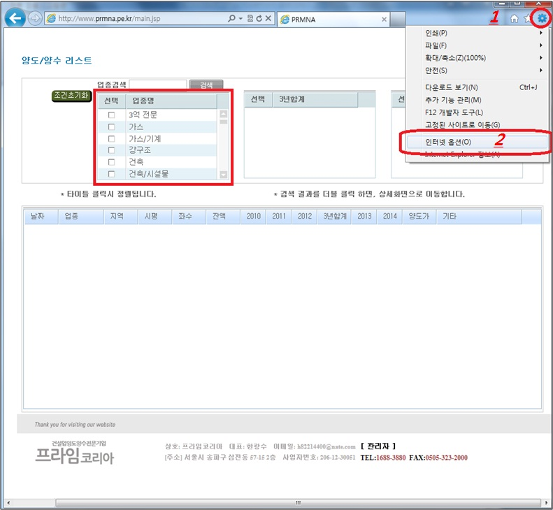
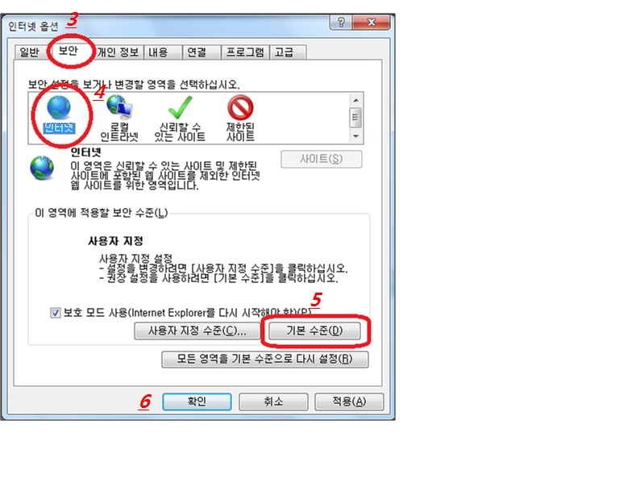

|
[양도/양수리스트] 화면에서 업종 명 목록이 보이지 않는 경우, 인터넷 브라우저의 보안 설정을 다음 설명과 같이 바꾸시면 물건을 검색/확인 할 수 있습니다. 1. 브라우저의 [도구]버튼을 클릭 2. [인터넷 옵션]을 선택  3. [인터넷 옵션] 창에서 [보안] 탭을 선택합니다. 4. [인터넷] 영역을 선택합니다. 5. [기본수준] 선택 후, 6. [확인]을 하면 보안 설정이 완료됩니다. 7. 설정완료 후 하단의 [돌아가기] 버튼을 누르면 정상 실행이 됩니다.  |
| 돌아가기 |